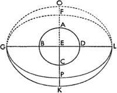
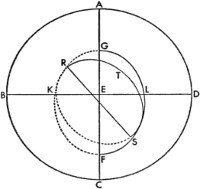
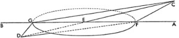
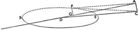
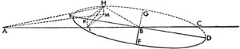
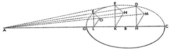
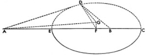
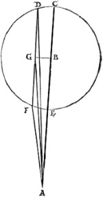
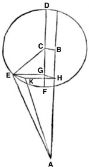
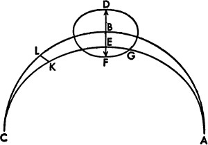

Dünya'nın deviniminin, gezici yıldızların boylamdaki görünen hareketleri üzerinde tahmin ettiğimiz etkisinin, gücünün ne kadar olduğunu ve bütün görünümleri ne ölçüde ortaya çıkardığını elimizden geldiğince gösterdik. Geriye bu gezegenlerin enlemde birbirinden ayrılan hareketleri kaldı; bu bölümde onları ele alıp Dünya'nın aynı hareketliliğinin onlar üzerinde ne ölçüde etkili olduğunu ve yasalarını nasıl belirlediğini göstereceğiz. Bu, ilmin gerekli kısmını oluşturuyor: Zira bu gezegenlerin sapmaları doğuşlarında ve batışlarında veyahut belirmelerinde ve kaybolmalarında neredeyse hiç farklılık göstermiyor; ayrıca yine yukarıda bu gezegenlerin diğer görünümlerine dair açıklama da mevcut. Hakiki konumlarının ise sadece, enlemlerinin yanı sıra boylamlarının da ekliptik kapsamında ortaya konmasıyla bilinebileceği söylenmişti. Buna göre eski matematikçilerin Dünya'nın hareketsizliğiyle kanıtlamaya çalıştığı şeyi biz Dünya'nın hareketliliği düşüncesiyle belki de daha etkili ve uygun şekilde sunacağız.

1. Beş Gezici Yıldızın Enlemdeki Sapmasına Dair Genel Açıklama
Eskiler tüm gezegenler için enlemde, boylamdaki iki düzensizliğe karşılık gelen, biri yörünge çemberlerinin dış merkezliliğinden kaynaklanan; diğeri dış tekerleme eğrilerine uyan iki sapma olduğunu bulmuştu. Sık sık tekrarladığımız gibi, biz dış tekerleme eğrilerinin yerine sadece Dünya'nın büyük yörünge çemberini aldık; aynı olduklarından, bu yörünge çemberinin her daim sabit olan ekliptik düzlemine göre bir eğimi yoktur; aksine, gezegenlerin yörünge çemberleri bu düzleme değişken bir açıyla eğik olup bu değişkenlik Dünya'nın büyük yörünge çemberinin devinimleri ve hareketi göz önünde tutularak hesap edilir. Fakat yüksekteki üç gezegen Satürn, Jüpiter ve Mars, diğer iki gezegenin uyduğu yasalardan farklı olarak boylamsal hareket eder; bu yüzden enlemde en ufak farklılık göstermez. Bu yüzden eskiler evvela bu gezegenlerin enlemdeki kuzey sınırlarının nerede ve ne kadar uzaklıkta olduğunu araştırmıştır. Ptolemaeus Satürn ve Jüpiter'in sınırlarını Terazi'nin civarında, Mars'ın sınırını ise Yengeç'in bittiği yerin civarında, dış merkezli çemberin yerberisi yakınında bulmuştur. Fakat biz, zamanımızda Satürn'ün kuzey sınırını Akrep'in 7ºsinde, Jüpiter'inkini Yengeç'in 27ºsinde, Mars'ınkini Aslan'ın 27ºsinde bulduk; buna göre yeröteleri bizim zamanımıza kadar azalarak değişmiş, eğimler ve enlemin temel noktaları bu yörünge çemberlerinin hareketini izlemiştir. Gezegenlerin, bu sınırlar arasındaki 90ºlik düzeltilmiş ya da görünen mesafeler boyunca, Dünya'nın aksine enlemde hiçbir sapma gerçekleştirmediği görülüyor. Bu yüzden bu ortalama boylamlardayken, tıpkı Ay'ın ekliptik kesitinde olması gibi, yörünge çemberlerinin ekliptikle ortak kesitinde oldukları anlaşılır. Ptolemaeus bu noktalara düğüm[166] demiştir: Gezegenin buradan itibaren kuzey enlemine dahil olduğu yükselen düğüm ve gezegenin buradan itibaren güney enlemine geçtiği alçalan düğüm. Ekliptik düzleminde her daim aynı kalan Dünya'nın büyük yörünge çemberi bu gezegenlere bir enlem sunmaz, fakat enlemdeki her sapma düğümlerden hesap edilir ve düğümlerden farklı olarak konumlarda büyük ölçüde değişiklik gösterir. Dünya, gezegenlerin Güneş'le karşılaştığı, yani Güneş karşı konumunun yaşanmış olduğu görülen diğer konumlara yaklaştığında; gezegenler her daim, kuzeye doğru kuzey yarım dairesinde ve güneye doğru güney yarım dairesinde, Dünya'nın başka bir konumunda olduğundan daha büyük bir sapmayla ve Dünya'nın gerektirdiği yaklaşma ve uzaklaşmadan çok daha büyük bir farkla hareket eder. Bu durumdan gezegenlerin yörünge çemberlerinin eğiminin sabit olmadığı, aksine Dünya'nın büyük yörünge çemberine ait devinimleriyle ölçülebilecek bir sallantıyla değiştiği anlaşılır. Buna göre Venüs ve Merkür'ün, farklı bir şekilde fakat en yüksek, en alçak ve ortalama apsitte geçerli olduğu gözlenen belli bir kurala göre saptığı görülür. Bu yüzden ortalama boylamda, yani Güneş'in ortalama hareket çizgisi gezegenlerin en yüksek veya en alçak apsidinden bir çeyrek mesafede bulunduğunda ve gezegenler, akşam veya sabah yıldızları olarak Güneş'in aynı ortalama hareket çizgisinden yörünge çemberlerinin bir çeyrek mesafesindeyken, eskiler gezegenlerin ekliptikten sapmadığı ve bu yüzden bunların bu anlarda ayrı yörünge çemberleriyle ekliptiğin ortak kesitinde bulunduğu sonucuna varmıştı. Bu ortak kesit, gezegenlerin yerötesiyle yerberisinden geçer; buna göre Dünya'dan daha yüksekte ya da alçakta olduklarında, sapmalarını daha da belli ederler; Venüs en kuzeyde, Merkür ise en güneydeyken, en büyük sapmaları Dünya'dan en uzak oldukları anda, yani akşam belirmelerinde ve sabah kayboluşlarında gerçekleşir. Ve tersine Dünya'ya daha yakın konumda akşamları kaybolur, sabahları belirirler; Venüs en güneyde, Merkür ise en kuzeydedir. Bunun tersine Dünya bunun ve diğer ortalama apsidin zıt konumundayken, yani dış merkezli çemberin ayrıklığı 270º iken Venüs, Dünya'dan daha büyük bir güney mesafesinde, Merkür'se kuzeyde; Dünya'nın daha yakın konumunda ise Venüs kuzeyde, Merkür güneydedir. Dünya'nın gündönümünde, bu gezegenler yeröte durumundayken Ptolemaeus, sabah yıldızı olan Venüs'ün enleminin kuzey, akşam yıldızı olan Venüs'ün enlemininse güney enlemi olduğunu; Merkür içinse bunun tam tersi, yani sabah yıldızının güneyde, akşam yıldızının ise kuzeyde olması gerektiğini buldu. Bu bağıntılar yerberinin zıt konumunda tam ters şekildedir; öyle ki Venüs Lucifer'i güneyde, Venüs Vesperugo'su kuzeyde; fakat Merkür sabah yıldızı olarak kuzeyde, akşam yıldızı olarak güneydedir. Eskiler her iki konumda Venüs'ün kuzey sapmasının güney sapmasından, Merkür'ün güney sapmasının ise kuzey sapmasından her daim daha büyük olduğunu bulmuştu. Bu durumdan hareketle bu konum için ikili, genel anlamdaysa üçlü enlem düşünmüşlerdir. Ortalama boylamlarda beliren ilk enleme eğim, en yüksek ya da en alçak apsitte beliren ikinci enleme eğiklik, ikinciyle kavuşumda beliren üçüncü enleme de sapma demişlerdir; bu Venüs için her daim kuzeyde, Merkür için güneydedir. Bu dört sınır arasında enlemler birbirine karışmış, biri artarken diğeri azalmış, biri yerini diğerine bırakmıştır; işte bütün bunlar için gerçek nedenleri sunacağız.

2. Gezegenlerin Enlemde Taşındığı Çemberlere Dair Hipotezler
O halde bu beş gezegen için yörünge çemberlerinin ekliptik düzlemine eğik olduğu kabul edilmelidir; ekliptiğin çapı boyunca uzanan ortak kesiti de farklı fakat düzenli bir eğim gösterir. Ekinoksların devinmesiyle alakalı olarak da gösterdiğimiz gibi Satürn, Jüpiter ve Mars'ta kesit açısı –ekseni çevresinde de olduğu gibi– bu kesit çevresinde de basit fakat paralaks hareketiyle ölçülebilir bir sallantıya uğrar. Kesit açısı belirli bir zaman diliminde bu sallantıyla artar ya da azalır; öyle ki ne zaman Dünya gezegene, yani Güneş'le karşı konumdaki gezegene en yakın konuma gelir, işte o zaman gezegenin yörünge çemberinin en büyük eğimi söz konusudur; zıt konumda en küçük eğim, ortalama konumda ise ortalama eğim gerçekleşir: Sonuç olarak gezegen kuzey ya da güney enleminin en uzak sınırındayken, enlemi, Dünya'nın en yakınındayken Dünya'ya en uzak olduğu konumunda göründüğünden daha büyük görünür. Ve bu düzensizlik, yakın olanların uzak olanlardan daha büyük görünmesine uygun olarak yalnızca Dünya'nın farklı mesafelerde bulunuşundan kaynaklanabiliyorsa da yine de bu gezegen enlemlerinin artış ve azalmaları arasında oldukça büyük farklar vardır. Zaten bu, yörünge çemberlerinin de eğiklikleriyle orantılı bir sallantı hareketi olmadıkça meydana gelemez. Fakat önceden de söylediğimiz gibi, bir sallantıya uğrayan cisimler için uç noktalar arasında bir ortalama değer almamız gerekir. Bunun daha iyi anlaşılabilmesi için ABCD, Dünya'nın ekliptik düzlemindeki, merkezi E olan büyük yörünge çemberi olsun; gezegenin FGKL yörünge çemberi ABCD'ye ortalama ve daimi yükselimle eğik olsun; öyle ki F enlemin kuzey sınırı, K güney sınırı, G kesitin alçalan düğümü ve BED, GB ve DL düz çizgileriyle uzatılan ortak kesit olsun.

Bu dört durak, apsitlerin hareketleri boyunca gerçekleşenin dışında değişmez. Yani gezegenin boylamdaki hareketinin FG çemberinin düzleminde değil, FG ile eşmerkezli ve ona eğik olan başka bir OP çemberininkinde meydana geldiği anlaşılsın. Bu iki çember birbirini aynı GBDL düz çizgisinde keser. Bu yüzden gezegen, OP yörünge çemberinde taşınırken aynı zamanda sallantı hareketiyle FK düzlemine düşerek FK düzlemini herhangi bir yöne doğru aşar ve böylece enlemin değişken görünmesini sağlar. Gezegen evvela O noktasında, en büyük kuzey enleminde ve A'da Dünya'ya en yakın konumunda olsun; daha sonra gezegenin enlemi, OGP yörünge çemberinin en büyük enleminin açısı olan OGF'yle orantılı olarak artış gösterecektir. Bu sallantı hareketi, aynı zamanda bir yaklaşma ve uzaklaşma hareketidir; zira hipoteze göre bu sallantı paralaks hareketiyle ölçülebilir. Öyleyse Dünya B noktasındaysa, O noktası F noktasıyla çakışacak; gezegenin enlemi aynı düzlemde, öncekinden daha küçük; Dünya C noktasındaysa, çok daha küçük görünecektir; öyle ki O sallantının en uç ve farklı kısmına geçecek, kuzey enleminin eksiltici sallantısından, yani OGF'ye eşit olan açıdan ne kadar fazla enlemi varsa o kadarını bırakacaktır. Buradan hareketle gezegenin kuzeyde F civarındaki enlemi, Dünya yerleştirildiği noktadan A noktasına varıncaya değin geri kalan CDA yarım çemberi kadar artacaktır. Dünya'nın hareketinin başlangıç noktası C olarak belirlenirken, P noktası civarına yerleştirilen meridyen gezegeni için de aynı ilerleyiş rotası söz konusu olacaktır. Fakat Güneş'le karşı konumda olan ya da onun tarafından gizlenen gezegen, G veyahut L düğümlerinden birinde yer alırsa, her ne kadar bu zamanda FK ve OP yörünge çemberleri birbirleriyle en büyük eğime sahip olsalar bile, gezegen enlemi algılanamaz; zira gezegen yörünge çemberlerinin ortak kesitinde bulunmaktadır. Buradan gezegenin kuzey enleminin F'den G'ye kadar nasıl azaldığının ve güney enleminin G'den K'ye kadar nasıl artış gösterdiğinin, ancak L noktasında tümüyle yok olarak kuzeye döndüğünün kolayca anlaşılabileceğini düşünüyorum. Bu, yüksekteki üç gezegen için de geçerli olan yoldur. Venüs ve Merkür diğer gezegenlerden enlemde, boylamda olduğu gibi az bir farkla ayrılmaz; zira yeröte ve yerberi boyunca konumlanan yörünge çemberlerinin ortak kesitlerine sahiptirler. Bu durumda ortalama apsitlerde en büyük eğimleri, yüksekteki gezegenlerde olduğu gibi, bir sallantı hareketiyle değişebilir durumdadır; ancak bu gezegenler farklı bir sallantıya uğrar. Bununla birlikte her iki sallantı aynı yolla değil de, Dünya'nın devinimleriyle ölçülebilir. Buna göre ilk sallantı şöyle bir niteliğe sahiptir: Gezegenlerin apsitlerine göre Dünya'nın bir devinimi söz konusu olduğunda üzerinde durduğumuz yeröte ile yerberi boyunca uzanan kesiti hareketsiz bir eksen olarak alan sallantı hareketinin iki devinimi olur; öyle ki Güneş'in ortalama hareket çizgisi ne zaman gezegenlerin yerberisinde ya da yerötesinde bulunursa, en büyük kesit açısı oluşur, en küçük açıysa ortalama boylamlarda ortaya çıkar. Fakat bundan sonra gelen ikinci sallantı bunda farklılık gösterir; hareketli ekseniyle şöyle bir etkisi vardır: Dünya ortalama boylamda yer aldığında, Venüs ya da Merkür gezegeni her daim eksende, yani bu sallantının ortak kesitinde yer alır; fakat Dünya yeröte ya da yerberiyle aynı hizada bulunduğunda, en büyük sapmasını gösterir; her ne kadar ilk basit eğim nedeniyle bu anda gezegenler enlemsiz görülseler de, söylediğimiz gibi, Venüs her daim kuzeye, Merkür'se güneye bakar. Örneğin Güneş'in ortalama hareketi Venüs'ün yerötesinde ve Venüs de aynı konumdayken, basit eğimle ve ilk sallantıyla uyumlu olarak ekliptik düzlemiyle yörünge çemberinin ortak kesitinde yer alan Venüs'ün bu anda enlemi görünmez; fakat ekseni ya da kesiti dış merkezli yörünge çemberinin çapraz çapı boyunca çizilen ve çapı en yüksek ya da en alçak apsit boyunca dik kesen ikinci sallantı, gezegene en büyük sapmasını katar.

Fakat bu zaman noktasında Venüs diğer çeyreklerden birindeyse ve yörünge çemberinin ortalama apsitleri boyunca uzanıyorsa bu sallantının ekseni Güneş'in ortalama hareket çizgisiyle çakışacak ve Venüs'ün kendisi, güney eğiminden çıkardığı ve daha küçük bıraktığı en büyük sapmayı, kuzey eğikliğine ekleyecektir. Bu şekilde sapma sallantısı, Dünya'nın hareketiyle ölçülebilir. Bütün bunların daha kolayca kavranabilmesi için yine ABCD en büyük yörünge çemberi olarak çizilsin. Venüs'ün ya da Merkür'ün yörünge çemberi FGK, ABC'yle dış merkezli olsun ve eşit FGK eğimiyle uyumlu bir şekilde eğik olsun. FG, yörünge çemberinin F yerötesi, G yerberisi boyunca çizilen iki çemberin ortak kesiti olsun. Daha kolay bir gösterim için dış merkezli yörünge çemberinin GKF eğimini basit yapılı ve sabit alalım; ya da isterseniz, en büyük ve en küçük arasında orta dereceli bir eğim olarak alalım; FG ortak kesiti sadece yerberinin ve yerötenin hareketine göre değişiklik göstersin. Dünya bu ortalama kesitteyken, yani A ya da C'deyken ve gezegen de aynı çizgideyken, bu anda gezegenin enleminin olmayacağı açıktır; zira söylendiği gibi bütün enlem, gezegenin kuzey ve güney yakınlaşmasını FKG çemberinin ekliptik düzlemine eğimiyle orantılı olarak etkilediği GKF ve FLG yarım çemberlerinin yanındadır. Kimisi gezegenin bu ayrılmasına çarpıklık, kimisi yansıma diyor. Fakat Dünya B ya da D'deyken, yani gezegenin ortalama apsitlerindeyken aynı FKG ve GFL enlemleri yukarıda ve aşağıda olacaktır; bu durumda bunlara yükselim derler. Bu yüzden bu enlemler, ortalama konumlarda isimleri yer değiştirse bile ilk enlemlerden gerçekten değil de ismen ayrılır. Fakat bu çemberlerin eğim açısının çarpıklıkta yükselimdekinden daha büyük olduğu bulunduğundan; eskiler bu açının, yukarıda söylendiği gibi, eksen olarak FG kesitinin etrafında kavis çizerek belli bir sallantıda meydana geldiğini düşünmüştür. Buna göre kesit açısı her ikisi için bilindiğinden; ikisi arasındaki farktan en küçük eğimden en büyüğüne sallantının ne kadar büyük olduğunun anlaşılması kolay olacaktır. Bu durumda başka bir çemberin, yani ayrılma çemberinin, daha sonra açıklanacağı gibi, GKFL çemberine eğik ve Venüs'le eş merkezli, fakat Merkür'ün dış merkezli çemberiyle dış merkezli olduğu bilinsin: RS, sallantının ekseni ve çemberdeki hareketli eksen için ortak kesit olsun; bu durumda Dünya A ya da B noktasındayken, gezegen ayrılmanın en uzak sınırında, yani T noktasında olur; Dünya A noktasından uzaklaştıkça gezegenin de ayrılma dairesinin eğimi azalırken T noktasından hareket ettiği anlaşılsın: Buna göre Dünya AB çeyreğini kat ettiğinde gezegenin bu enlem düğümüne, yani R'ye varmış olduğu anlaşılmalıdır. Fakat bu anda düzlemler, sallantının ortalama hareketinde kesişir ve farklı yönlere meylederler; evvelden güneyde olan ayrılmanın geri kalan yarım çemberi kuzeye geçer. Venüs bu yarım çembere geçerken, güneyden uzaklaşarak yeniden kuzeye yönelir, bu sallantıyla bir daha güneye yönelmez, tıpkı Merkür gibi zıt yönden geçerek güneyde durur; Merkür'ün sallantısı ise Venüs'ten farklı olarak bir dış merkezli çemberle eşmerkezli olan bir çemberde değil, bir dış merkezli çemberle dış merkezli olan çemberde yer alır. Boylamdaki harekete özgü düzensizliği gösterirken bu dış merkezli çember yerine bir dış tekerleme eğrisi kullandık. Fakat burada önce enlemsiz boylam, daha sonra boylamsız enlem üzerinde durduğumuzdan ve bir ve aynı devinim onları birleştirip eşit kıldığından, her iki düzensizliğe de yol açanın ve dış merkezli olup aynı zamanda bir eğimi olanın bir ve aynı hareket ya da bir ve aynı sallantı olduğu yeteri kadar açıktır; burada üzerinde durduğumuz ve aşağıda hakkında daha fazla şey söyleyeceğimiz, bunun dışında bir hipotez değildir.
3. Satürn, Jüpiter ve Mars'ın Yörünge Çemberlerinin Eğimleri Ne Kadar Büyüktür?
Beş gezegenin uzanımına dair hipotezimizi ortaya koyduktan sonra, detaya inmemiz ve evvela tek tek çemberlerin eğimlerinin ne kadar büyük olduğunu anlamamız gerekiyor. Eğimli ve ekliptiğe dik çemberin kutupları boyunca geçen büyük daireye karşı bu eğimleri dikkatle inceliyoruz; enlemdeki geçişler bu büyük dairelere göre gözlemlenir. Buna göre bu eğimleri anladığımızda, her bir gezegenin enlemlerini öğrenme yolu da gösterilmiş olacak. Bir kez daha yüksekteki üç gezegenle başladığımızda Ptolemaeus'a göre, güney enleminin en uzak sınırlarındaki Satürn'ün Güneş'le karşı konumundaki sapmasının 3º5', Jüpiter'in sapmasının 2º7', Mars'ın sapmasının 7º; fakat zıt konumlarda, yani Güneş'le kavuşumlarında Satürn'ün sapmasının 2º2', Jüpiter'in sapmasının 1º5', Mars'ın sapmasının ise, neredeyse ekliptiğe dokunacak ölçüde sadece 5' olduğunu görürüz. Buna göre enlemleri, Ptolemaeus'un yaklaşık olarak kararma ve belirmelerde gerçekleştirdiği gözlemlerden saptamak mümkündür. Bunları bu şekilde ortaya koyduktan sonra ekliptiğe dik ve merkez boyunca uzanan düzlemde AB ekliptikle birlikte düzlemin ortak kesiti, CD en büyük kuzey ve güney sınırları boyunca çizilen üç dış merkezli çemberden biriyle birlikte düzlemin ortak kesiti olsun. Ayrıca E ekliptiğin merkezi, FEG Dünya'nın büyük yörünge çemberinin çapı olsun. Bu durumda D güney, C kuzey enlemi olsun; CF, CG, DF ve DG eklensin. Buna karşılık verilen konumlardan birinde Dünya'nın EG büyük yörünge çemberinin, gezegenin ED dış merkezli çemberine oranları zaten gezegenlerle ilgili olarak tek tek verilmişti. Ancak en büyük enlemlerin konumları gözlemlerden hareketle sunulmuştu. Buna göre EGD üçgeninin dış açısı ve en büyük güney enleminin BGD açısı verildiğinden, dış merkezli çemberin ekliptik düzlemine doğru en büyük güney eğiminin açısı olan iç ve karşıt nitelikli GED açısı da düzlemsel üçgenlerle ilgili olarak gösterilenlerle bulunacaktır.

Benzer şekilde en küçük güney enlemi, yani EFD açısı sayesinde en küçük eğimi göstereceğiz. EFD üçgeninde EF kenarının ED kenarına oranı EFD açısıyla birlikte bulunduğundan, en küçük güney eğiminin dış açısı olan GED de bulunur. Buradan hareketle iki yükselim arasındaki farktan ekliptikle ilgili olarak dış merkezli çemberin toplam sallantısını elde ederiz. Dahası, eğimin bu açılarına karşılık, karşıt kuzey enlemlerini, yani AFC ve EGC açısını ölçeriz; bu açılar gözlemlere uyarsa, bu hiç hata yapmadığımızın göstergesi olacaktır. Örneğimizde diğerlerine göre enlemde daha büyük bir uzanıma sahip olan Mars'ı ele alacağız. Ptolemaeus, Mars'ın yerberide en büyük güney enleminin yaklaşık 7º, yerötede en büyük kuzey enleminin ise 4º20' olduğunu göstermişti. Fakat biz BGD açısının 6º50' olduğunu hesapladığımızdan, sonuç itibariyle AFC açısının yaklaşık 4º30' olduğunu buluruz. Buna göre EG'nin ED'ye oranı, 1p'nin 1p22'26''ye oranına eşit ve BCD açısı 6º50' olduğundan en büyük güney eğiminin DEG açısı da yaklaşık 1º51'dır. EF'nin CE'ye oranı 1p'nin 1p39'57''ye oranına, CEF açısı da DEG açısına, yani 1º51'ya eşittir. Bu, gezegen Güneş'le karşı konumdayken üzerinde durduğumuz CFA açısının dış açı olması sebebiyle 4º30' olması sonucunu doğurur. Benzer şekilde Güneş'le kavuşumun gerçekleştiği zıt konumda DFE açısının 5' olduğunu düşünürsek, DE ve EF kenarı ile EFD açısı bulunur; EDF açısı da 4', en küçük eğimin dış açısı olan DEG ise yaklaşık 9'dır. Bu, bize kuzey enleminin açısı olan CGE'nin 6' olduğunu gösterecektir. Buna göre en küçük eğimin en büyük eğimden çıkarılması durumunda, yani 1º5'nın 9'dan farkı 1º42'dır; bu da bu eğimin sallantısıdır ve 1º42'nın yarısı yaklaşık 50,5'dır. Diğer iki gezegen, yani Jüpiter ve Satürn'le ilgili olarak da enlemlerle birlikte eğimlerin açılarının bulunması için benzer bir yöntem söz konusudur; Jüpiter'in en büyük eğimi 1º42', en küçük eğimi 1º18' olup toplam sallantı 24'dan fazla değildir. Bu durumda Satürn'ün en büyük eğimi 2º44', en küçük eğimi 2º16', aralarındaki sallantı ise 19'dır. Buradan hareketle, gezegenler Güneş'in altında saklı kalırken, eğimin zıt konumda beliren en küçük açıları sayesinde enlemdeki uzanımları ekliptikten itibaren ortaya konabilecektir: Gösterildiği ve aşağıdaki tablolarda yer alacağı gibi, Satürn'ün uzanımı 2º3', Jüpiter'in uzanımı ise 1º6'dır.
4. Diğer Enlemlerin Tek Tek ve Genel Olarak Açıklanması Üzerine
Bütün bunlar gösterildikten sonra bu üç gezegenin enlemleri hem genel olarak hem de tek tek ortaya konacak. Önceden de söylendiği gibi, uzanımın en uzak sınırları boyunca çizilen AB çizgisi ekliptiğe dik olan düzlemin ortak kesiti olsun. Kuzey sınırı A'da olsun; AB'yi D noktasında kesen CD, gezegenin yörünge çemberinin dik ortak kesiti olsun. D'nin merkez olduğu EF Dünya'nın büyük yörünge çemberi olarak çizilsin. E'deki karşıt noktadan EF gibi bilinen bir yay ölçülsün; F'den ve C'den, gezegenin konumu olarak CA ve FG dikleri AB'ye doğru çizilsin; FA ve FC de eklensin.
Öncelikle bu yapıyla, dış merkezli çemberin eğim açısı olan ADC'nin ne kadar büyük olduğuna bakacağız. Burada Dünya E noktasındayken en büyük eğimin ortaya çıktığı gösterilmiş oldu. Dahası toplam sallantının, çapı BE olan EF çemberindeki Dünya'nın devinimi sayesinde, sallantının doğası gereği ölçülebilir olduğu ortaya kondu. Buna göre EF yayının bulunmasıyla ED'nin EG'ye oranı da bulunacaktır; bu, toplam sallantının daralan ADC açısına oranıdır. Fakat yukarıda gösterildiği gibi, CD'nin ED'ye oranı bulununca yine CD'nin geri kalan DG'ye oranı; buradan hareketle CD ile AD'nin GD'ye oranları ve geri kalan AG ile FG de bulunur: Buna göre FG, EF'nin iki katını ayıran kirişin yarısına eşittir. Bu durumda AGF dik üçgeninin iki kenarı bulunduğundan AF kenarıyla AF'nin AC'ye oranı da bulunur. Sonuç itibariyle ACF dik üçgeninin iki kenarı bulununca AFC açısı da bulunur; bu, aramakta olduğumuz görünen enlem açısıdır. Burada bir kez daha Mars'ı örnek olarak alacağız. Gezegenin en büyük güney enleminin sınırı, yaklaşık en alçak apside denk gelen A civarında olsun. Buna göre gezegenin konumu, gösterildiği gibi C'de olsun. Dünya E noktasındayken eğim açısı 1º50'dır. Bu durumda Dünya'yı F noktasına koyalım, paralaks hareketini de EF yayıyla uyumlu olarak 45º yapalım. Buna göre ED 10.000 birimken, FG çizgisi 7071 birimdir; GE ise 10.000'in 7071'den farkına, yani 2929 birime eşittir; bu da yarıçapın geri kalan kısmıdır. ADC açısına ait sallantının yarısının 50,5' olduğu gösterilmiş olur; bu durumda sallantının yarısına ait artma ve azalma oranı da ortaya çıkar: DE'nin GE'ye oranı, 50,5'nın 5'ya oranına, yani 1º35'ya eşittir; bu da eğim açısıdır. Bu durumda ADC üçgeninin kenarları ve açıları bulunacaktır; yukarıda ED 6580 birimken CD'nin 9040, FG'nin 4653, AD'nin 9036 birim olduğu gösterilmiş olur; geri kalan AEG 4383, AC ise 249,5 birimdir. Buna göre AFG dik üçgeninde AG dik çizgisi 4383, FG tabanı 4653, AF kenarı ise 6392 birimdir. Böylelikle CAF açısının 90º olduğu ACF üçgeninde AC ve AF kenarları bulunur; ACF açısı 2º15'dır; bu da F'de konumlanan Dünya'nın görünen enlem açısıdır. Aynı usavurumu Satürn ve Jüpiter için de kullanacağız.

5. Venüs ve Merkür'ün Enlemleri Üzerine
Sıra Venüs ve Merkür'e geldi; söylediğim gibi bu gezegenlerin enlemdeki geçişleri eşzamanlı ve karmaşık üç enlem sapması sayesinde gösterilecek. Tek tek anlaşılabilmeleri için eskilerin daha basit kullanımından ötürü yükselim dediği kavramla başlayacağız. Dünya, gezegenin yerötesinden yerberisine doğru çizilen çemberin bir çeyreği boyunca hareket ederken yükselim kimi zaman sadece diğerlerinden farklılık gösterir; boylamdaki tam hareketlere uyacak şekilde düğümlerin ve ortalama boylamların etrafında belirir. Dünya çok yaklaştığında Venüs için 6º22'lık, Merkür için 4º5'lık kuzey ya da güney enlemi bulunur. Buna karşılık Dünya'dan en büyük mesafede Venüs için 1º2', Merkür için 1º45' söz konusudur. Bunun yanında bu konumda eğim açıları çizdiğimiz eşitlemeler tabloları sayesinde ortaya konur; bu konumda Venüs'ün Dünya'dan en büyük mesafesi enleme göre 1º2', en küçük mesafesi 6º22', ortalama enlemin her bir yanında çemberin yayı yaklaşık 2º30'; Merkür'ün en büyük mesafesi 1º45', çemberin toplam yayı 6º15', en küçük mesafesi 4º5'dır. Sonuç itibariyle Venüs'ün çizdiği çemberlerin eğim açısı 2º30', dört dik açı 360ºyi verirken Merkür'ünki 6º15'dır. Evvela Venüs'le ilgili olarak göstereceğimiz gibi, bu açılar sayesinde tek tek yükselim enlemleri ortaya konabilir. Bunun için ekliptik düzleminde ve dik düzlemin merkezi boyunca ABC, iki düzlemin ortak kesiti, DBE ise dik düzlemin Venüs'ün yörünge çemberinin düzlemiyle ortak kesiti olsun. A, Dünya'nın merkezi; B, gezegenin yörünge çemberinin merkezi; ABE yörünge çemberinin ekliptikle eğim açısı olsun. DFEG çemberi B etrafında, FBG çapı ise DE çapına dik olarak çizilsin. Bu durumda çember düzlemi varsayılan dik düzlemle öyle ilişkilidir ki, DE'ye dik çizilen çemberin düzlemindeki çizgiler birbirine ve ekliptik düzlemine paralel olacak şekilde ayarlanır; çember düzleminde FBG çizgisi çizilmiş olur. O halde problemimiz, verilen eğim açısı ABE ile beraber AB ve BC düz çizgileri sayesinde gezegenin, örneğin Dünya'ya en yakın E noktasından 45º mesafedeyken, enlemde ne kadar uzakta olduğunu ortaya çıkarmaktır. Ptolemaeus'u izleyerek bu konumu seçtik; böylece yörünge çemberinin eğimi, boylamda Venüs'e ya da Merkür'e göre bir farklılık içerse de içermese de belirgin olabilecektir.

Bu tarz farklılıklar; D, F, E, ve G sınırları arasındaki orta konumlar civarında oldukça belirgin olmalıdır; zira gezegen bu dört sınırda yer aldığında, kendisinden de anlaşılabileceği gibi, yükselimsizken sahip olduğu boylama sahiptir. Buna uygun olarak söylendiği gibi EH yayını 45º olarak düşünelim, HK BE'ye, KL ve HM ekliptiğin düzlemine dik olarak çizilsin; HB, LM, AM ve AH eklensin. Böylece HK ekliptik düzlemine paralelken, LKHM dik paralelkenarını elde etmiş oluruz. Bu yüzden LAM açısı boylamda eşitleme içerir ve HAM açısı enlemdeki geçişe karşılık gelir; zira HM, ekliptiğin aynı düzlemine diktir. Bu durumda HBE açısı 45º olduğundan, EB 10.000 birimken, HK, HE'nin iki katını ayıran kirişin yarısına, yani 7071 birime eşittir. Benzer şekilde KBL üçgeninde BKL açısı 2º30', BLK açısı 90º, BE 10.000 birimken BK kenarı 7071 birimdir. Buradan hareketle KL kenarı 308, BL kenarı 7064 birimdir. Fakat yukarıda da gösterildiği gibi, AB'nin BE'ye oranı yaklaşık olarak 10.000'in 7193'e oranına eşit olduğundan; HK 5086 birime, HM KL'ye, yani 221 birime eşittir; BL 5081'dir, buna göre geri kalan LA ise 4919 birimdir. Dahası, ALM üçgeninde AL kenarı bulunduğundan ve LM HK'ye, ALM açısı da 90ºye eşit olduğundan AM kenarı 7075 birim, MAL açısı 45º57'dır; bu da hesaba göre Venüs'ün büyük paralaksı ya da eşitlemesidir. Benzer şekilde MAH üçgeninde AM kenarı 7075 birime, MH kenarı KL kenarına, MAH açısı da 1º47'ya eşit olup enlemdeki açısal yükselimdir. Bu eğimden kaynaklanan Venüs'ün boylamdaki farklılığını incelemek sıkıcı olmayacaksa, LH kenarının LKHM paralelkenarının köşegeni olduğunu göz önünde tutup ALH üçgenini ele alalım. Buna göre AL 4919 birimken, LH 5091 birim, ALH açısı 90ºdir. Buradan hareketle AH kenarı da 7079 birimdir. Buna göre kenarların oranı bulunduğundan HAL açısı 45º59'dır. MAL açısının 45º57' olduğu gösterilmişti; buna göre, gösterildiği üzere, sadece 2'lık bir fark söz konusudur. Yine Merkür'le ilgili benzer bir yükselim şeması çizerek öncekine benzeyen şeklin yardımıyla enlemleri göstereceğiz. EH yayı 45º iken, AB kenarının 10.000 birim olduğu durumda, HK KB'ye, o da 7071 birime eşittir. Bu durumda göstermiş olduğumuz boylamdaki farklardan, yarıçap BH 3953, AB 9964 birimken BK'nin KH'ye, onun da 2975 birime eşit olduğu sonucu çıkarılabilir. Dört dik açı 360ºyi verirken ABE eğim açısının 6º15' olduğu gösterildiğinden; buna uygun olarak BKL dik üçgeninin açıları bulunur; KL tabanı 304 birim, BL dik kenarı ise 2778 birimdir. Buna göre çıkarmayla AL de 7186 birimdir. Fakat LM HK'ye, o da 2795 birime eşittir; buna göre ALM üçgeninde L açısı 90º olup AL ve LM kenarları da bulunduğuna göre AM kenarı 7710, LAM açısı da hesaplanmış eşitleme olan 21º16'dır. Benzer şekilde AMH üçgeninde AM kenarı bulunduğundan, MH kenarı KL kenarına, AM ve MH kenarlarının oluşturduğu M açısı 90ºye, aranan enlem olan MAH açısı ise 2º16'ya eşittir. Fakat hakiki ve görünen eşitlemenin ne kadar etkili olduğunu araştırmak istersek paralelkenarın LH köşegenini ele alalım: Kenarlardan LH'nin 2811 birim olduğunu çıkartırız. AL de 7186 birimdir. Buradan hareketle LAH açısı 21º23' olup görünen hareketin eşitlemesidir ve gösterildiği gibi, hesaplanan önceki farka göre yaklaşık 7'lık fazlalık içerir.
6. Yörünge Çemberlerinin Yerötedeki ve Yerberideki Eğikliğine Göre Venüs ile Merkür'ün Enlemdeki İkinci Geçişleri Üzerine
Gezegenlerin yörünge çemberlerinin ortalama boylamları civarında görülen enlemdeki geçişlerine dair bu kadar yeterli; bu enlemlere yükselimler dendiğini de söylemiştik. Yukarıdaki üç gezegende olduğu gibi değil de, aşağıdaki gibi, biri usavurarak daha kolayca ayırt edebilsin ve kavrayabilsin diye şimdi, yerberide ve yerötede beliren ve kendilerine sapmadaki üçüncü ayrılığın eklendiği bu enlemlerden bahsetmek gerekiyor. Ptolemaeus bu enlemlerin, gezegenler yörünge çemberlerine dokunan Dünya'nın merkezinden geçen düz çizgilerde yer aldığında en büyük görünümüne kavuştuğunu gözlemlemişti; söylediğimiz gibi bu durum, Güneş'ten itibaren en büyük sabah ve akşam mesafelerinde gerçekleşir. Ptolemaeus Venüs'ün kuzey enlemlerinin, güney enlemlerinden 1/3º kadar; Merkür'ün güney enlemlerinin ise kuzey enlemlerinden 1/2º kadar daha büyük olduğunu bulmuştu. Buna karşılık hesapların zorluğunu ve çokluğunu aza indirmek istediğinden enlemin farklı bölümlerine bir ortalama oran olarak 2º30'yı aldı: Bu enlemler Dünya'nın etrafındaki ve ekliptiğe dik çemberlerde bu derecelere ulaşır ki bu çemberler sayesinde enlemler hesaplanabilir. Birazdan göstereceğimiz gibi Ptolemaeus, burada belirgin bir hatanın belirmeyeceğini düşünmüştü. Fakat ekliptiğin her iki yanında eşit uzanım olarak 2º30'yı alırsak ve eğikliklerin enlemlerini saptayana dek şimdilik sapmayı hariç tutarsak, gösterimlerimiz daha basit ve kolay olacaktır. Buna göre evvela enlemsel uzanımın en büyük durumunun, eşitlemelerin boylamdaki en büyük durumlarına kavuşacağı dış merkezli çemberin teğet noktası civarında söz konusu olduğunu göstermemiz gerekir. Bunun için ekliptik düzleminin Venüs ya da Merkür'ün dış merkezli çemberine ait düzlemle ortak kesiti çizilsin; bu kesit yeröte ile yerberi boyunca geçecektir; yine bu kesitte A Dünya'nın konumu; B ekliptikle eğimli olan CDEFG dış merkezli çemberinin merkezi olarak alınsın; buna göre herhangi bir yerde CG'ye dik olarak çizilen düz çizgiler eğikliğe eşit açıları oluşturur. AE, çembere teğet olacak, AD de onu bir noktada kesecek şekilde çizilsin.
Ayrıca D, E ve F noktalarından DH, EK ve FL çizgileri CG, DM ve EN'ye dik olarak çizilsin; FO, ekliptiğin esas düzlemine dik olsun; MH, NK ve OL, ayrıca AN ve AOM de eklensin. Buna göre AOM düz çizgidir; zira üç noktası iki düzlemde, yani ekliptik düzleminde ve bu düzleme dik olan ADM düzleminde yer alır. Buna göre söz konusu eğiklikte HAM ve KAN açıları, bu gezegenlerin eşitlemelerini içerir; DAM ve EAN açıları ise enlemdeki uzanımlardır. Boylamdaki eşitlemenin yaklaşık olarak en büyük olduğu teğet noktasında konumlanan EAN açısının enlemdeki en büyük açı olduğunu söyleyebilirim. Buna göre EAK açısı diğerlerinden daha büyük olduğundan, KE'nin EA'ya oranı, HD'nin DA'ya oranından; yine KE'nin EA'ya oranı, LF'nin FA'ya oranından büyüktür. Buna karşılık EK'nin EN'ye oranı, HD'nin DM'ye oranına, yani LF'nin FO'ya oranına eşittir. Söylediğimiz gibi, EKN açısı HDM açısına, o da LFO açısına eşit olduğundan M açısı N açısına, o da O açısına, yani 90ºye eşittir. O halde NE'nin EA'ya oranı, MD'nin DA'ya oranından; yine NE'nin EA'ya oranı DF'nin FA'ya oranından büyüktür; yine DMA açısı ENA açısına, o da OFA açısına, yani 90ºye eşittir. Buna göre EAN açısı DAM açısından büyüktür; EAN açısı bu şekilde ortaya konan diğer açıların her birinden daha büyüktür. Bu yüzden eşitlemeler arasında bulunan ve boylamdaki eğiklikten kaynaklananlar içinde en büyük geçişteki E noktasında hesaplanan fark, en büyük olandır. Buna göre benzer üçgenlerde eşit açıları gördüklerinden HD'nin HM'ye oranı, KE'nin KN'ye oranına; o da, LF'nin FO'ya oranına eşittir. Bu çizgiler, aralarındaki farklarla aynı oranda oldukları için EK'nin KN'den farkının EA'ya oranı, HD'nin HM'den farkının AD'ye oranından; yine EK'nin KN'den farkının EA'ya oranı, LF'nin FO'dan farkının AF'ye oranından büyüktür. Buradan hareketle dış merkezli çemberin dilimlerinin boylamdaki eşitlemelerin, boylamdaki en büyük eşitlemelerin enlemdeki en büyük geçişlere oranları ölçüsünde, enlemdeki geçişlerle aynı orana sahip olacağı açıktır; zira bizden önce de gösterildiği gibi, KE'nin EN'ye oranı, LF'nin FO'ya oranına, yani HD'nin DM'ye oranına eşittir.
7. Venüs ve Merkür'ün Eğiklik Açılarının Büyüklüğü
Bunlar bu şekilde ortaya konduktan sonra, şimdi de her bir gezegenin düzlemlerinin eğikliğinin belirlediği açının büyüklüğünün ne kadar olduğu üzerinde duralım; evvelce söyleneni tekrar edelim: Her bir gezegenin enlemde en büyük mesafesi ile en küçük mesafesi arasında 5ºlik bir fark vardır; öyle ki yörünge çemberinin konumuna göre çoğu durumda farklı zamanlarda ya daha kuzeyde ya da daha güneyde olurlar. Venüs'ün geçişteki ya da belirgin farkı, dış merkezli çemberin yerötesi ya da yerberisi boyunca 5ºden daha büyük ya da daha küçük bir uzanım oluşturur; Merkür'ün geçişi 1/2º daha büyük ya da daha küçüktür. Buna göre önceki gibi, ABC ekliptiğin ortak kesiti ve dış merkezli çember olsun; gezegenin yörünge çemberi B merkezi etrafında, anlatıldığı şekliyle, ekliptik düzlemine eğik bir biçimde çizilsin. AD düz çizgisi Dünya'nın merkezinden, D noktasında yörünge çemberine değecek şekilde çizilsin; DF, D noktasından itibaren CBE'ye, DG ise ekliptiğin esas düzlemine dik olarak çizilsin; buna BD, FG ve AG eklensin. Dahası DAG açısının, dört dik açı 360ºyi verirken, 2º30' olduğu düşünülsün; zaten bu da her bir gezegen için ortaya konan enlemdeki farkın yarısıdır.

Problemimiz, düzlemler arasındaki eğiklik açısının, yani DFG açısının büyüklüğünü bulmaktır. Buna göre Venüs gezegeniyle ilgili olarak da gösterildiği gibi yerötedeki büyük olan mesafe, yarıçap 7193 birimken, 10.208 birim; yerberideki küçük olan mesafe 9792 birim; Ptolemaeus'un bu gösterimde kullanmayı tercih ettiği gibi ortalama mesafe ise 10.000 birimdir: Ptolemaeus'un da hesap zorluğundan, fazlalığından kaçınmak ve bir özet sunmak istediğinde yaptığı gibi, uç noktalar büyük bir fark yaratmasın diye ortalama oranı kullanmak daha iyidir. Buna göre AB'nin BD'ye oranı 10.000'in 7193'e oranına eşittir; ADB açısı 90ºdir. O halde AD kenarı 6947 birimdir. Yine, DAG açısı 2º30'ya; AGD açısı da 90ºye eşit olduğundan AGD üçgeninin açıları bulunmuş olur; DG kenarı da, AD 6947 birimken, 303 birimdir. Böylece DF ve DG kenarları bulunur, DGF açısı da 90ºdir; buradan hareketle DFG açısı 3º29' olup eğim ya da eğiklik açısıdır. Fakat DAF açısının FAG açısından fazlası boylamda paralaksın neden olduğu farkı içerdiğinden fark, bu büyüklüklerin hesaplanmasıyla ölçülecek hale gelir. Buna göre AD'nin 6947 birim, DG 303 birimken DF'nin de 4997 birim olduğu gösterilmiş olur. Burada AD'nin DG'den farkı AG'yi, FD'nin DG'den farkı da GF'yi verir; buna göre AG 6940, FG 4988 birimdir. Fakat AG 10.000 birimken, FG 7187 birim, FAG açısı 45º57'; AD 10.000 birimken, DF 7193 birim, DAF açısı da yaklaşık 46ºdir. Buna göre en büyük eğiklikte paralaks eşitlemesi yaklaşık 3' eksiktir. Böylece yörünge çemberinin eğim açısının, ortalama apsitte 2º30' olduğu açıklanmış oldu; fakat burada, üzerinde durduğumuz gibi, sallantının ilk hareketine denk gelen yaklaşık 1ºlik bir artış söz konusudur ve orana eklenmiştir. Merkür için de benzer bir kanıtlama söz konusudur. Yörünge çemberinin Dünya'dan en büyük mesafesi, yörünge çemberinin yarıçapı 3573 birimken 10.948 birim, en küçük mesafesi 9052 birim, aralarındaki ortalama mesafe ise 10.000 birimdir. Ayrıca AB'nin BD'ye oranı, 10.000'in 3573'e oranına eşittir. O halde AD kenarı 9340 birimdir; BD'nin BF'ye oranı, AB'nin AD'ye oranına eşit olduğuna göre, bu durumda DF 3337 birimdir. Enlemin açısı olan DAG 2º30' olduğuna göre, DF 3337 birimken DG 407 birimdir. Böylece DFG üçgeninde bu iki kenarın oranı bulunmuş olur; G açısı 90ºdir; buradan hareketle DFG açısı da yaklaşık 7ºdir. Bu da, Merkür'ün yörünge çemberi ile ekliptik düzlemi arasındaki eğimin ya da eğikliğin açısıdır. Fakat ortalama boylamlar ya da çeyreklerle ilgili olarak eğim açısının 6º5' olduğu gösterilmişti. O halde buna sallantı hareketiyle 45' eklenmiştir. Eşitlemeleri ve farkları belirlemede de benzer bir yaklaşım söz konusudur; AD 9340, DF 3337 birimken, DG 407 birimdir. Buna göre AD'nin DG'den farkı, AG'yi; DF'nin DG'den farkı da FG'yi verir. O halde AG 9331, FG 3314 birim olduğundan; buradan hareketle eşitlemeye karşılık gelen GAF açısının 20º48'; eğiklikle orantılı açıdan yaklaşık 8' fazla olan DAF açısının ise 20º56' olduğu sonucu çıkarılır. Geriye bu eğiklik açılarının ve enlemlerin, yörünge çemberinin en büyük ve en küçük mesafesine göre gözlemden çıkarılan bu bilgilerle uyumlu olup olmadığını incelemek kalıyor. Bunun için bir kez daha aynı şekil üzerinde ve evvela Venüs'ün yörünge çemberinin en büyük mesafesi için AB'nin BD'ye oranı, 10.208'in 7193'e oranına eşit olsun. ADB açısı 90º olduğundan, DF 5102 birimdir. Fakat eğiklik açısı olan DFG'nin 3º29' olduğu bulunmuştur; buradan hareketle AD 7238 birimken, DG kenarı 309 birimdir. Buna göre AD 10.000 birimken, DG 427 birimdir; buna bağlı olarak DAG açısının, Dünya'dan en büyük mesafede 2º27' olduğu sonucuna varılır. Fakat en küçük mesafede yörünge çemberinin yarıçapı 7193 birimken, AB 9792 birimdir. Yarıçapa dik olan AD 6644 birimdir; benzer şekilde BD'nin DF'ye oranı, AB'nin AD'ye oranına eşit olduğundan DF de 4883 birimdir. Fakat DFG açısı 3º28'dır; buna göre AD 6644 birimken, DG 297 birimdir. Üçgenin kenarları bulunduğuna göre, DAG açısı 2º34'dır. Fakat ne 3' ne de 4' bir astrolabium vasıtasıyla ölçülebilecek kadar büyük bir orandır; bu yüzden Venüs gezegeninin en büyük eğiklik enlemi olarak alınan değer doğrudur. Yine Merkür'ün yörünge çemberinin en büyük mesafesi alınsın; AB'nin AD'ye oranı, 10.948'in 3573'e oranına eşit olsun; en nihayetinde öncekine benzer gösterimler sayesinde AD'nin 9452 birim, DF'nin 3085 birim olduğu sonucuna ulaşırız. Fakat burada eğiklik açısı olarak DFG'nin 7º olduğunu da kaydetmiştik; bundan hareketle DF 3085 birim, DA 9452 birim ve DG 376 birimdir. DAG dik üçgeninin kenarlarının bulunmasından hareketle DAG açısı yaklaşık 2º17'dır; bu da enlemdeki en büyük uzanımdır. Fakat en küçük mesafede AB'nin BD'ye oranı, 9052'nin 3573'e oranına eşittir; o halde AD 8317 birim, DF 3283 birimdir. Aynı mantıkla AD 8317 birimken, DF'nin DG'ye oranı, 3283'ün 400'e oranına eşit olduğuna göre DAG açısı da 2º45'dır. Ortalama orana göre enlemde uzanımın 2º30'sıyla yerötedeki uzanım arasında en az 13'; ortalama uzanımla yerberideki uzanım arasında ise en fazla 15' fark vardır. Ortalama orana göre hesaplamalarımızı yaparken, fark olarak 1/4ºyi kullanacağız; zira bu, gözlenen farklardan çok büyük bir sapma içermiyor. Boylamdaki eşitlemelerin enlemdeki en büyük geçişe oranının, yörünge çemberinin geri kalan kesitindeki eşitlemelerin enlemdeki tek tek geçişlere oranıyla aynı olduğunu ve bütün bunları gösterdikten sonra, Venüs'le Merkür'ün yörünge çemberinin sapmasından kaynaklanan tüm enlemlere ait rakamları elde etmiş olacağız. Fakat söylediğimiz gibi, sadece yeröte ile yerberi arasındaki orta noktada beliren bu enlemleri hesapladık; bu enlemlerin en büyüğünün 2º30', Venüs'e ait en büyük eşitlemenin 46º, Merkür'e ait en büyük eşitlemenin ise 22º civarında olduğunu gösterdik ve düzensiz hareketler tablosunda eşitlemeleri, yörünge çemberlerinin tek tek kesitlerinin karşısına koyduk. Buna göre iki gezegenden her biri için daha büyük olan eşitlemelerin küçük olanlardan fazlalığıyla orantılı olarak 2º30'dan bir bölümü alıp onu, tüm rakamlarıyla birlikte çizdiğimiz aşağıdaki tabloda göstereceğiz. Böylece ortalama çeyrekler ve ortalama boylamlarla ilgili yükselimlerin enlemlerini ortaya koyduğumuz gibi, Dünya en yüksek ve en alçak apsidindeyken, mevcut eğikliklerin tek tek bütün enlemlerini elde etmiş olacağız. Bu dört sınır arasında beliren enlemler, matematiğin incelikli sanatı ve öne sürülen hipotezin yardımıyla fazla emek sarf etmeden ortaya konabilir. Ptolemaeus elinden geldiğince kısa bir şekilde anlatmaya çalışarak bu enlem görünümlerinin her birini bir bütün olarak görmüş ve bütün artışlarla azalışların, tıpkı Ay enleminde olduğu gibi bir birlik içinde, orantılı olarak gerçekleştiğini düşünmüştü: Bunun için en büyük enlemleri 5º olduğundan ve bu, 60'ın 1/12'sine denk geldiğinden enlemi 12 parçaya bölmüştü. Aşağıda daha da açıklığa kavuşturulacağı gibi, bu orantılı dakikaların sadece bu iki gezegen için değil, aynı zamanda yüksekte bulunan üç gezegen için de geçerli olduğu kanaatine erişmişti.


8. Eskilerin Sapma Dediği, Merkür ve Venüs Enleminin Üçüncü Görünüşü Üzerine
Bütün bunlar aktarıldıktan sonra, sıra sapma denen enlemdeki üçüncü hareket üzerinde durmaya geldi. Dünya'yı evrenin merkezine yerleştiren eskiler, önceden de söylediğimiz gibi, özellikle dış tekerleme eğrisi yerötede ya da yerberideyken beliren ve Venüs için her daim kuzeye doğru 1/6º, Merkür içinse güneye doğru 3/4º olan sapmanın, bir dış tekerleme eğrisi içeren ve Dünya'nın merkezi etrafında dönen bir dış merkezli çemberin eğiminden kaynaklandığına inanıyordu. Buna karşılık yörünge çemberlerine ait eğimin eşit ve her daim aynı olduğunu düşünüp düşünmedikleri tam belli değildir; kullandıkları rakamlar, orantılı dakikaların 1/6'sının Venüs'ün, 3/4'ünün ise Merkür'ün sapması olarak alındığını gösteriyor. Temel olarak aldıkları dakikalara ait oranın gerektirdiği gibi, eğim açısı her daim aynı kalmadıkça bu durum geçerli değildir. Buna karşılık açı aynı kalırsa; optikte olduğu gibi bir ışık kırılmasıyla meydana geldiğini söylemediğiniz sürece, gezegenlerin ortak kesitten aynı enleme nasıl ansızın geri sıçradığını anlamanız da mümkün olmayacaktır. Fakat biz burada birden değil de doğası gereğince zaman içinde ölçülen hareket üzerinde duruyoruz. Buna göre açıkladığımız böylesi bir sallantının, dairenin parçalarının ziyadesiyle farklı yönlerde hareket etmesini sağladığını bilmeliyiz. Bu durum kaçınılmaz olarak rakamların Merkür için 1/5º farklı olmasını gerektiriyor.
Hipotezimize uygun olarak bu enlem değişkense ve tümüyle basit yapılı olmasa da görünüşte bir hata da ortaya çıkarmıyorsa, bütün farklar için de görülebileceği gibi durumun aşağıdaki gibi olması pek şaşırtıcı olmamalıdır: Ekliptiğe dik bir düzlemde ABC, iki düzlemin ortak kesiti olsun; ortak kesitte A, Dünya'nın merkezi; eğik çemberin kutuplarından geçen B, Dünya'dan en büyük ve en küçük mesafede, CDF çemberinin merkezi olsun. Yörünge çemberinin merkezi yerötede ya da yerberideyken, yani AB çizgisindeyken; yörünge çemberine paralel çizilen çembere uygun olarak en büyük sapma gezegenin bulunduğu yerde olur; DF, yörünge çemberinin çapı olan CBE'ye paralel çizilen çaptır. DF ve CBE, CDF düzlemine dik çizilen düzlemlerin ortak kesiti olarak alınır. Bu durumda DF, paralel çemberin merkezi olacak G noktasında ikiye bölünsün; buna, BG, AG, AD ve AF de eklensin. Venüs'ün en büyük sapmasında olduğu gibi BAG açısının 10' olduğunu kabul edelim. Buna göre ABG üçgeninde B açısı 90º olur ve kenarların oranını da elde ederiz: AB'nin BG'ye oranı, 10.000'in 29'a oranına eşittir. Fakat ABC çizgisi 17.193 birime eşitken geri kalan AE çizgisi 2807 birim; CD'nin iki katını ayıran kirişin yarısı da EF'nin iki katını ayıran kirişin yarısına, yani BG'ye eşittir. Buna göre CAD açısı 6', EAF açısı yaklaşık 15'dır. O halde BAG açısının CAD açısından farkı 4', EAF açısının BAG açısından farkı ise 5'dır; bu farklar küçüklüklerinden ötürü göz ardı edilebilir. O halde Dünya yerötede ya da yerberide konumlandırıldığında, Venüs'ün görünen sapması, bulunduğu yörüngenin herhangi bir noktasında üç aşağı beş yukarı 10' civarında olacaktır. Fakat Merkür söz konusu olduğunda, BAG açısı 45' ve AB'nin BG'ye oranı, 10.000'in 131'e oranına eşit, ABC 13.573 birim ve çıkarmayla AE 6827 birimken; CAD açısı 33', EAF açısı ise yaklaşık 70'dır. Buna göre CAD açısının 12'lık eksikliği, EAF açısının ise 15'lık fazlalığı vardır. Fakat bu farklar, Merkür görüş açımıza girmeden, Güneş ışıklarıyla neredeyse ortadan kaybolur; bu nedenle eskiler sadece gezegenin görünüşü ve basit sapması üzerinde durmuştur. Fakat biri gezegen Güneş'in ışıkları altında saklandığında geçişlerinin kesin oranını en az çabayla incelemek ister diye, aşağıda bunun nasıl olacağını göstereceğiz. Örnek olarak Merkür'ü alacağız; zira o Venüs'ten daha dikkate değer bir sapma sunmaktadır. Bunun için A'daki Dünya, gezegenin yörünge çemberine ait yerötede ya da yerberideyken AB, gezegenin yörünge çemberinin ve ekliptiğin ortak kesitindeki düz çizgi olsun.
Buna göre eğiklikle ilgili olarak yaptığımız gibi, en büyük ve en küçük mesafe arasındaki orta mesafe olarak AB'yi aynı şekilde 10.000 birim alalım. Buna göre CB mesafesinde dış merkezli yörünge çemberine paralel olan DEF çemberi C merkezi etrafında çizilsin; gezegen bu paralel çemberde, bu andaki en büyük sapmasındaymış gibi anlaşılır. Kaçınılmaz olarak AB'ye paralel olan DCF bu çemberin çapı olsun; DCF ve AB aynı düzlemde gezegenin yörünge çemberine dik olsun. Buna göre gezegenin sapmasını araştırırken kullanacağımız EF yayı 45º olsun. EG, CF'ye; EK ve GH yörünge çemberinin esas düzlemine dik olarak çizilsin. Dik paralelkenar HK, AE, AK ve EC'nin eklenmesiyle tamamlansın. Buna göre Merkür'ün en büyük sapmasında, AB 10.000 birimken, BC 131 birimdir. CE 3573 birim olup EGC dik üçgeninin açıları bulunmuş olur; buradan hareketle EG kenarı, KH kenarına, o da 2526 birime eşittir. BH, EG'ye, o da CG'ye eşit olduğundan AH, BA'nın BH'den farkına, yani 7474 birime eşittir. Bu durumda AHK üçgeninde H açısı 90º olup H açısını oluşturan kenarlar da bulunur: AK kenarı 7889 birimdir. Buna karşılık KE kenarı, CB kenarına, o da GH kenarına, yani 131 birime eşittir. Buna göre AKE üçgeninde K dik açısını oluşturan iki kenar, yani AK ve KE kenarları bulununca; önerilen EF yayıyla aradığımız sapmaya karşılık gelen ve gözlenen açıdan çok az farklı olan KAE açısı da bulunur. Benzer yaklaşımı Venüs ve diğer gezegenler için de sergileyeceğiz ve bulgularımızı ilişikteki tabloya işleyeceğiz. Bu açıklama yapıldıktan sonra, bu sınırlar arasındaki sapmalara denk gelen orantılı dakikaları inceleyeceğiz. Buna göre ABC, Venüs ya da Merkür'ün dış merkezli yörünge çemberi; A ve C enlemdeki bu hareketin düğümleri; B ise en büyük sapma sınırı olsun. B merkezi ve içinden geçen DBF çapıyla birlikte DFG küçük çemberi çizilsin; sapma hareketinin sallantısı, çap boyunca gerçekleşir.
Öyle ki Dünya gezegenin dış merkezli yörünge çemberinin yerötesinde ya da yerberisindeyken gezegenin kendisi en büyük sapmasında, yani bu anda gezegeni taşıyan çemberin küçük çembere dokunduğu F noktasındadır. Buna göre Dünya bir noktada gezegenin dış merkezli çemberinin yerötesinden ya da yerberisinden kaldırılsın; bu harekete uygun olarak benzer FG yayı küçük çember üzerinde alınsın. Gezegeni taşıyan, ayrıca küçük çemberi ve E noktasında DF çapını kesecek olan AGC çemberi çizilsin; gezegenin bu çemberde, yani hipoteze göre FG yayına benzer olan EK yayıyla uyumlu olarak K noktasında bulunduğu kabul edilsin; KL, ABC çizgisine dik olarak çizilsin. Burada problemimiz FG, EK ve BE sayesinde KL'nin büyüklüğünü, yani gezegenin ABC çemberinden mesafesini bulmaktır. Bunun için FG yayı sayesinde EG yayı, dairesel ya da dışbükey çizgiden neredeyse hiç farklı olmayan bir düz çizgi olarak; benzer şekilde EF birim olarak, ayrıca BF ile birlikte kalan BE de bulunacaktır. Buna göre BF'nin BE'ye oranı, CE'nin iki katını ayıran kirişin CK'nin iki katını ayıran kirişe oranına, o da BE'nin KL'ye oranına eşittir. Buna uygun olarak BF'yi ve CE çemberinin yarıçapını aynı, yani 60 olarak düşünürsek; bunlardan BE'yi elde edeceğimiz sayıyı buluruz. Bu sayıyı kendisiyle çarpıp çıkan sonucu 60'a bölersek EK yayıyla orantılı dakikaları, yani KL'yi elde eder ve bu sayıları yine aşağıdaki tablonun beşinci, yani sonuncu sütununa ekleriz.